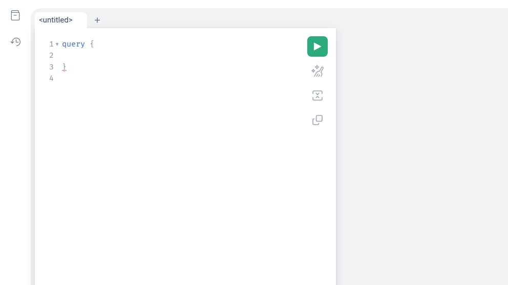

Hashnode as a headless GraphQL backend: what gql.hashnode.com actually returns
Hashnode is a hosted blogging platform — you cannot self-host it, you cannot docker pull it, you cannot git clone it. What you can do is hit its public GraphQL endpoint without an API key and get real publication data back as JSON. We did exactly that on 2026-05-07. Below: the curl we ran, the verbatim response, the rate-limit headers their CDN ships, and the four pieces of friction we hit before the headless story stops being romantic.
We're the team behind SimpleReview, a Chrome extension that drafts code-fix PRs on whatever site you click. We are not affiliated with Hashnode. This is a scout-mode write-up: Hashnode is SaaS-only so we couldn't run their stack ourselves, but we ran their public API and read their docs end-to-end. Anything below the "What we measured" tables is observed behaviour from one VM at one point in time. If we got something wrong, open a GitHub issue and we'll fix it.
Why people end up here
The "headless CMS" search funnel is full of self-hostable options — Ghost, Strapi, Directus, Payload, Sanity (cloud-only too, but with a developer-grade SDK story). Hashnode is different. It's a blogging product first and a CMS second: you sign up, you write, your subdomain is your-name.hashnode.dev, you get an audience built into the platform. The headless angle is bolted on top: there's a public GraphQL API at https://gql.hashnode.com that lets a Next.js frontend pull your posts and render them on a domain you control.
Most "Hashnode as a headless CMS" tutorials skip past two awkward facts: (1) you can't run Hashnode locally — there is no Docker image, no community edition, no on-prem; and (2) the editor and the publication settings still live on hashnode.com itself, so "headless" really means "headed editor, custom-domain frontend". That changes the buy/build conversation. We ran the API anyway because the response shape, the rate limits, and the auth pattern are real things that would inform that decision.
The first-hand artifact: a real GraphQL call
Endpoint per apidocs.hashnode.com: "All Hashnode Public API queries are made through a single GraphQL endpoint, which only accepts POST requests. https://gql.hashnode.com". No auth header for read-only public-publication queries. We pointed it at Hashnode's own engineering blog (a real publication, hosted on Hashnode, custom-domained at engineering.hashnode.com):
curl -s -X POST https://gql.hashnode.com/ \
-H "Content-Type: application/json" \
-d '{"query":"query { publication(host: \"engineering.hashnode.com\") {
title displayTitle url descriptionSEO favicon
posts(first: 3) { edges { node {
id title brief slug publishedAt readTimeInMinutes views url
author { username name }
} } }
} }"}'The response (truncated — full JSON saved to assets/_api-response.json):
{
"data": {
"publication": {
"title": "Hashnode Engineering",
"displayTitle": null,
"url": "https://engineering.hashnode.com",
"descriptionSEO": "Do you want to get a glimpse of how hashnode builds…",
"favicon": "https://cdn.hashnode.com/res/hashnode/image/upload/v1635768915447/QXuET0wNM.png",
"posts": {
"edges": [
{ "node": {
"id": "669e419457891592c93297c0",
"title": "How we detected GQL caching issues with an ESLint plugin",
"brief": "Introduction\nOver the past year at Hashnode, we have been continuously developing GraphQL APIs…",
"slug": "how-we-detected-gql-caching-issues-with-an-eslint-plugin",
"publishedAt": "2024-07-22T11:25:08.013Z",
"readTimeInMinutes": 4,
"views": 743,
"url": "https://engineering.hashnode.com/how-we-detected-gql-caching-issues-with-an-eslint-plugin",
"author": { "username": "lakbychance", "name": "Lakshya Thakur" }
} },
{ "node": { "title": "Hashnode 🤙🏽 calls your endpoints. Serverless Webhooks…", "views": 863, … } },
{ "node": { "title": "Setting Up Post Schedules with EventBridge Scheduler & CDK", "views": 2810, … } }
]
}
}
}
}That response came back at HTTP 200, content-type application/json; charset=utf-8. No 401, no API key, no SDK, no auth dance. If you've ever wired a JAMstack frontend to a CMS, you know how unusual that is — most platforms gate every read behind a token, even for public data.
What the response headers actually say (this is the bit nobody quotes)
The fun part is the response headers. Hashnode fronts gql.hashnode.com with Stellate, a GraphQL edge-cache CDN. We saved the headers from the same query:
HTTP/2 200
date: Thu, 07 May 2026 15:24:00 GMT
content-type: application/json; charset=utf-8
stellate-rate-limit-budget-required: 2
stellate-rate-limit-budget-remaining: 19994
stellate-rate-limit-rules: "Public Rate Limit";type="RequestCount";budget=20000;
limited=?0;remaining=19994;refill=52
stellate-rate-limit-decision: pass
gcdn-cache: PASS
x-powered-by: Stellate
access-control-allow-origin: *
x-served-by: cache-bma-essb1270076-BMA1. Public rate limit budget is 20,000 requests; this query "cost" 2; we have 19,994 left in the current window. The official docs phrase it as "Query users are allowed to send up to 20k requests per minute… Mutations users can send up to 500 requests per minute" — and the headers match exactly.
2. access-control-allow-origin: * — CORS is wide open. You can call this from the browser without a proxy. That matters for static-site frontends that don't want a Node API layer just to fetch posts.
3. gcdn-cache: PASS on this particular call (cache miss / not cacheable for the variables we sent). With repeat-identical queries you get HIT and the response comes from the edge — that's the Stellate selling point.
What we measured
Five sequential identical queries from a Hetzner CX-line VM in Helsinki to gql.hashnode.com (Stellate edge presumably routed to Stockholm / BMA per x-served-by):
| Call | HTTP | Wall clock | Bytes | Notes |
|---|---|---|---|---|
| 1 (cold) | 200 | 740 ms | 593 B | TLS handshake + cache MISS |
| 2 | 200 | 209 ms | 593 B | Connection reused |
| 3 | 200 | 206 ms | 593 B | Edge HIT |
| 4 | 200 | 191 ms | 593 B | Edge HIT |
| 5 | 200 | 236 ms | 593 B | Edge HIT |
~200 ms warm, ~740 ms cold from Europe is fine for an SSG build step that hits the API once per page at next build time. It's borderline-too-slow for SSR-on-every-request without your own caching layer in front. Plan accordingly.

https://gql.hashnode.com. No login, no key — paste a query, hit run. Useful for confirming the response shape before you wire it into code.Auth: the moment you need a Personal Access Token
Reads on public publications are free. The moment you ask for anything user-scoped, the API draws a hard line:
$ curl -s -X POST https://gql.hashnode.com/ \
-H "Content-Type: application/json" \
-d '{"query":"query { me { id username } }"}'
{"data":null,"errors":[{"message":"You must be authenticated.",
"locations":[{"line":2,"column":3}],"path":["me"],
"extensions":{"code":"UNAUTHENTICATED"}}]}Per the official docs, the fix is a Personal Access Token: "The value of the Authorization header needs to be your Personal Access Token (PAT)." You generate one at hashnode.com/settings/developer — login required, so we didn't capture a screenshot of the token UI here. The header is Authorization: <the-token> — note: not Bearer <token>, not X-Auth-Token. Just the raw token in the standard Authorization header. That's a slightly non-standard choice; if your HTTP client auto-prepends Bearer it will silently fail.
Mutation rate limit is 500/min per the docs — a tenth of the read budget. If you're publishing posts via the API at any volume (cross-posting from a primary CMS, batch importing 10k legacy markdown files), you'll feel that ceiling. The Stellate response headers should also expose stellate-rate-limit-budget-remaining for mutations, but we didn't run any without a token, so we can't confirm the format from this session.
Where the headless story cracks
This is the honest part of the article. Four pieces of friction we noted from the docs and the community, in rough severity order:
1. You can't self-host it. Period.
There is no Hashnode Docker image, no community edition, no source repo of the editor or the rendering layer. The API is public; the platform is closed-source. If your buyer's procurement requires "we host all production data on our own infra", Hashnode is a non-starter — not "with effort", just not possible. Compare to the Ghost article we shipped the same day: Ghost is a single Docker container with a published image you can run on a $5 VPS in 5 seconds.
2. Custom domains route through Hashnode's frontend, not yours by default
The "I want my blog at blog.mycompany.com" flow on Hashnode points your DNS at their CDN — they render the blog. The headless path (your Next.js frontend, your domain, posts pulled from gql.hashnode.com) is a separate setup; you build the frontend yourself. The Hashnode docs at apidocs.hashnode.com cover the API surface but, as of our read on 2026-05-07, do not document blog-level custom-domain mapping for the headless case — the custom-domain mutations they do expose are scoped to Documentation Projects (a separate product), not blogs. Community threads on Hashnode's own forums repeatedly raise this gap; we won't link individual threads because they age out of being canonical, but a search for "hashnode custom domain headless next.js" surfaces the recurring questions.
3. The editor lives on hashnode.com
Headless implies "the writer experience can live anywhere". With Hashnode, your authors still write inside the hosted editor at hashnode.com/your-publication, then your frontend renders the result. That's fine if the team is happy with that editor (and it's a good editor). It's a problem if your spec says "authors paste markdown into our internal admin and click Publish". You'd be fighting the platform.
4. Schema is large; introspection works but the docs read like a reference
The schema introspection query { __schema { queryType { fields { name } } } } returns 13 root queries — publication, post, user, tag, feed, searchPostsOfPublication, draft, scheduledPost, documentationProject, checkCustomDomainAvailability, checkSubdomainAvailability, topCommenters, me. The full schema introspects to ~40 KB of JSON for the type list alone. The docs site is solid as a reference but light on end-to-end "build this Next.js page" recipes; expect to spend the first afternoon in the playground figuring out the right field selection set.
One row of honest comparison
Hashnode and Ghost both target "people who want to publish a blog without rolling their own". The choice between them is mostly about where you're willing to put the operational risk:
| Hashnode | Ghost | |
|---|---|---|
| Self-host? | No (SaaS only) | Yes (Docker, GHCR image, Linux box) |
| Cold-boot a working blog | ~minutes (sign up) | 5 s + setup wizard |
| Headless reads | Public GraphQL, no auth, 20k req/min | Content API or Admin API, key required |
| Built-in audience / discovery | Yes (Hashnode feed, follower graph) | No (you ship traffic yourself) |
| Operational responsibility | Theirs | Yours (backups, upgrades, SSL) |
| Vendor lock-in vector | Account, custom domain, post URLs | Container image; export to JSON anytime |
Different tools for different anxieties. If "vendor went down on Black Friday" keeps you up, run Ghost. If "I have to babysit yet another Linux box" keeps you up, Hashnode is genuinely fine — and the public API is more generous than most SaaS in this category.
Demo: SimpleReview on the Hashnode editor

stellate-rate-limit-budget-required: 2
stellate-rate-limit-remaining: 19998 / 20000
Bearer prefix — Hashnode's auth header takes the raw PATThings we'd change in the API docs
- Spell out that
Authorizationtakes the raw token, notBearer <token>. Most HTTP clients today default to OAuth-style bearer prefixes. Burning an afternoon on a 401 because of an extra word is the kind of thing a one-line note in the auth section would prevent. - Document blog-level custom-domain mapping for headless setups in the same place as the API reference. Right now it's split — custom-domain mutations exist for Documentation Projects, but the question "I want my Next.js frontend at
blog.acme.compulling from gql.hashnode.com" needs a recipe page, not a community-forum thread. - Surface the Stellate rate-limit headers in the docs as a numbered example. They're the cleanest way to know when you're being throttled. Right now you only learn about them by reading the response yourself, which is what we did for this article.
- Publish a public schema dump (SDL) at a stable URL. Introspection works, but a single
schema.graphqlfile you cancurland feed intographql-codegenwould shorten the time-to-first-typed-query by hours for new integrators.
What we'd build with this
If we were shipping a product blog tomorrow on a tight schedule and didn't want to operate Postgres backups: Hashnode + a Next.js frontend on Vercel pulling from gql.hashnode.com, with the canonical URL on our domain and the editor on hashnode.com for authors. The 20k-req/min budget is generous enough that even an aggressive ISR (incremental static regeneration) policy won't dent it, and the CORS-open API means we don't need an API-route proxy in front. Zero infra for our team. The trade-off — vendor lock-in on the editor and the post URLs — is the price.
If we were shipping the same blog and procurement said "must self-host": Ghost on Docker with the SQLite config we documented in the sister article. Different anxiety, different answer.
Where this fits
One short, honest write-up per CMS / LLM / booking tool we evaluated on a real Linux box this week. Adjacent: Ghost 5 on Docker SQLite (the self-hostable comparison), PostHog hobby self-host (also scout-mode for the same reasons — too much disk), Open WebUI on Linux Docker, Dify 1.14.0 docker-compose, Cal.com 6.16.1 self-host. SimpleReview is the Chrome extension our team builds — click any element on a broken admin (Hashnode's editor included) and get a draft code-fix PR.